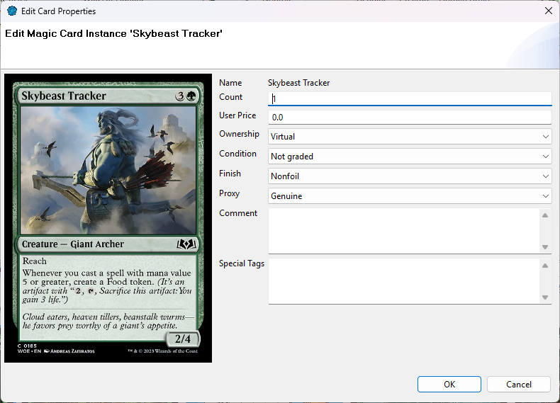
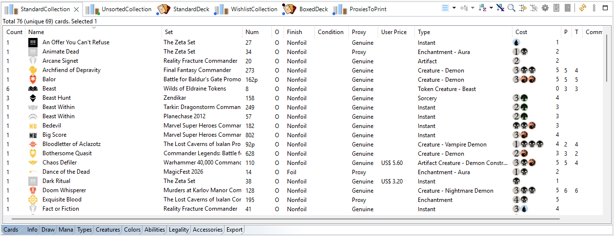

From the Scryfall Database (or the Gallery):
The new cards get the ownership of their list: Own in a Standard or For Trade collection, virtual in a deck or a Wishlist/To Print collection.
To add many cards at once from a list (a deck list, a spreadsheet, another app's export...), import them: see Importing cards.
Select a card and press + or -, or right-click Increase Count / Decrease Count. You can also type the count in the Edit Card dialog.
Right-click one or more cards and choose Edit Card....

| Field | Meaning |
|---|---|
| Count | How many copies this row stands for. |
| User Price | What you paid (or what the card is worth to you), in your currency. |
| Comment | Your own notes. |
| Ownership | Own or Virtual. Only the value that matches the card's list is offered (see Own and virtual cards). |
| Special Tags | Free-form tags, comma-separated: signed, altered,
misprint, promo, or your own. |
| Condition | Near Mint (NM), Lightly Played (LP), Moderately Played (MP), Heavily Played (HP), Damaged (DMG), or not graded. |
| Finish | Non-foil, Foil or Etched — only the finishes that printing exists in. |
| Proxy | Genuine or Proxy (see Proxies). |
With several cards selected, a field left on (unchanged) keeps each card's own value.
In a digital deck or collection there is no Condition and no Proxy, and no Etched finish.
Some columns can be edited directly: click the cell.

Select the cards and press Delete (or right-click Delete). ManaDesk asks you to confirm; hold Shift to skip the question.
See also: Moving, copying and splitting · Columns reference